Learning Objectives
After completing this lesson, you’ll be able to:
- Create a new dataset.
- Connect objects on the canvas.
- Interpret the translation log to identify problems with your workspace.
- Fix an error by setting a writer feature type parameter.
Instructions
In this lesson, you will:
- Scroll down to read the text below.
- Complete the exercise by following the steps.
- Complete the Quiz toward the bottom of the page.
- Optional: Let us know if you found this lesson relevant to your role by filling out the survey at the bottom of the page.
- Click 'Next' to mark the lesson complete.
Resources
- Starting workspace
- C:\FMEData\Workspaces\IntegrateDataWithTheFMEPlatform\write-data-and-basic-troubleshooting.fmw
- Complete workspace
- C:\FMEData\Workspaces\IntegrateDataWithTheFMEPlatform\write-data-and-basic-troubleshooting-complete.fmw
- BusinessOwners.xlsx
- C:\FMEData\Data\Planning\BusinessOwners.xlsx

Don't forget to follow the steps described below using your copy of FME. You'll need to complete the steps to answer quiz questions.
Writing Data

Now that Sven has read the source Excel business license data, he must add an Esri geodatabase writer to create his new dataset.
1) Open Starting Workspace
- Start FME Workbench (2026.1 or later).
- Open the starting workspace (C:\FMEData\Workspaces\IntegrateDataWithTheFMEPlatform\write-data-and-basic-troubleshooting.fmw).
2) Add Geodatabase Writer
- Click on the canvas and start typing “openfile.”
- Click the Destination button to filter the list to show only writers.
- Double-click the Esri Geodatabase (OpenFile Geodb) writer in the Quick Add dialog.
- Make sure you select the Writer, not Reader.
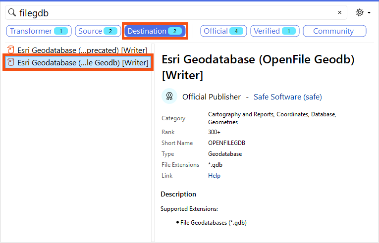
FME supports many versions of Esri Geodatabases. However, many of them are only accessible to users who have Esri ArcGIS licenses. The version we are using, Esri Geodatabase (OpenFile Geodb), can be used by anyone.
⭐ New for FME 2026.1: we've added a new reader and writer for File Geodatabases. Built on GDAL’s OpenFileGDB driver, this new reader and writer improves cross-platform compatibility (including macOS (Apple Silicon)), adds support for newer data types (Date, Time, Larger Integer), enhances geometry handling, and improves performance while remaining compatible with existing File Geodatabase feature sets.
Want to learn more about this feature? Watch our short demo video here.
- The Add Writer dialog appears.
- Under Dataset, enter “C:\FMEData\Output\Training\Vancouver:Businesses.gdb”.
- This is the location where you want to write the geodatabase.
- You might notice the
: in the path and wonder if that will cause a problem. The short answer is: yes, it will! But we are going to use it to show you how to handle errors in FME, so please include it for now. We'll fix it later.
- If you click the ellipsis icon [. . .] to navigate to the path, note that Vancouver:Businesses.gdb does not exist yet. That's OK! FME writers can create new datasets or edit or overwrite existing ones. In this case, the .gdb file does not exist yet, so you can type in Vancouver:Businesses.gdb and click Select .gdb file to confirm this is the new path you'd like to use.
- Your dialog should look like this.
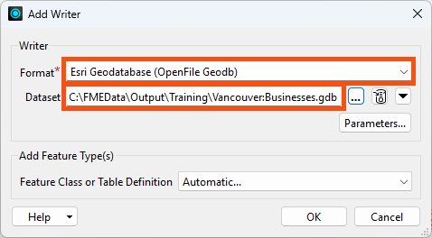
3) Set Writer Parameters
- Click Parameters.
- The Esri Geodatabase (File Geodb Open API) Parameters dialog opens.
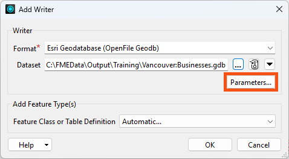
- Enable Overwrite Existing Database.
- This means the geodatabase is overwritten each time the workspace runs. Otherwise, records would be appended each run.
- If you don't see Overwrite Existing Geodatabase, verify that you chose a Writer instead of a Reader.
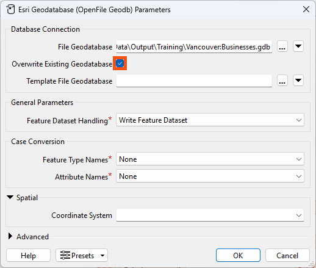
- If you wanted to specify a coordinate system, you could set it here as well. But here we'll use FME's default behavior; it will use the coordinate system of whatever data enters the writer.
- Click OK to accept the changes made in the dialog.
4) Set Feature Class or Table Definition
Finally, we need to set Feature Class or Table Definition. This parameter is set to Automatic by default. Automatic feature types adopt the schema of any features you connect to them. This is handy for quickly building a workspace, but in this example, we instead want to duplicate the schema of our BusinessOwners reader feature type.
- To copy the schema from the source data, change Feature Class or Table Definition to Copy from Reader...
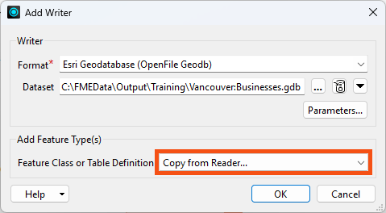
- Click OK.
- FME will prompt you to select a reader feature type from which to copy the writer feature type definitions. FME will create a writer feature type for each selected reader feature type.
- Click Select All to select all the PublicArt and BusinessOwners feature types.
- Click OK.
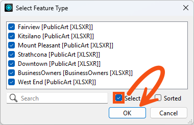
FME adds the writer feature types to the canvas:
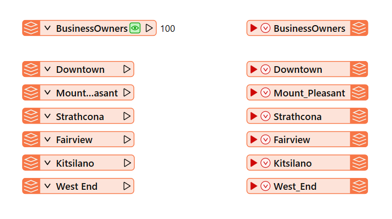
5) Connect Feature Types
Now, we need to connect the reader and writer feature types.
- Connect the BusinessOwners reader feature type to the corresponding writer feature type by clicking the reader feature type output port (gray triangle) and dragging your cursor to the writer feature type input port (red triangle).
- A new connection line appears. Let go to confirm the connection.
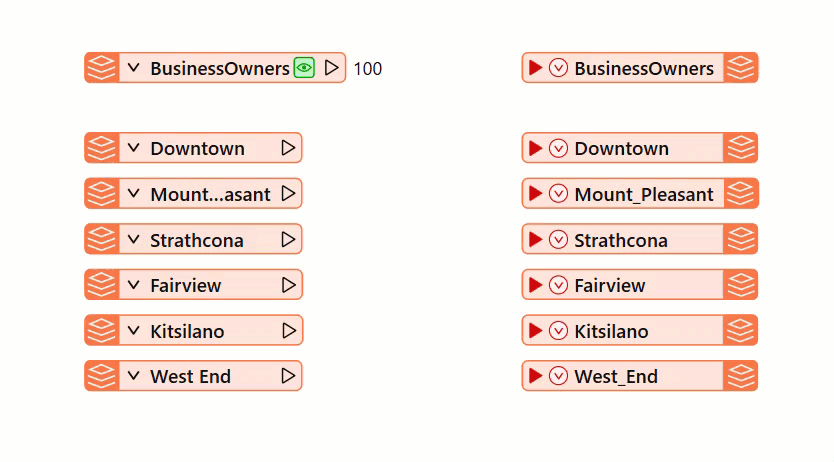
- Ignore the PublicArt feature types for now. We want to make sure the BusinessOwners feature type is working first. The workspace will still run with the PublicArt feature types disconnected.
- Click the Run button on the toolbar.
6) Identify Problems Using the Translation Log
- After the workspace finishes running, you will notice red entries in the Translation Log, indicating errors.
- Click on 4 Errors in the Translation Log to display errors only. Here, you will see:
OPENFILEGDB writer: Cannot create directory C:\FMEData\Output\Training\Vancouver:Businesses.gdb.
This error occurred because the path to the destination dataset is incorrect. FME cannot create such a path on Windows.
Fatal errors cause the workspace to stop running immediately. In this case, all four errors are caused by the incorrect path. Fixing the path will resolve all errors. Errors that cause the workspace to stop running often create additional error messages as the translation fails. Resolving the cause of the first error message will often resolve the subsequent error messages.
7) Fix the Error By Fixing the Path
- To fix this error, go to the Navigator.
- Click the right-pointing arrow to expand the Vancouver:Business writer.
- Double-click the File Geodatabase parameter to open it for editing.
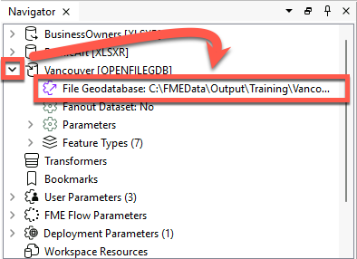
- Change the File Geodatabase parameter to C:\FMEData\Output\Training\Vancouver.gdb. It should look like this.
- You can change this parameter on readers and writers to change the location of the data after adding the reader or writer.
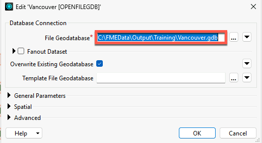
- Click OK to confirm the change.
- Select the BusinessOwners writer feature type.
- Click the Run To This button that appears.
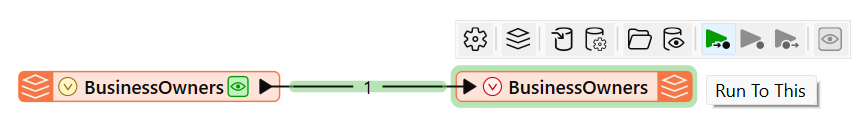
- Click Run in the Translation Parameter Values dialog to confirm the run.
- This time, the Translation Log reports no errors, but 10 warnings.
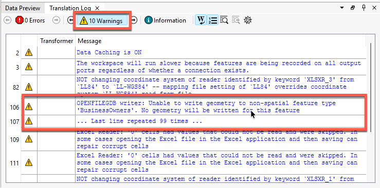
8) Fix the Warning By Fixing the Allowed Geometry
Some formats only allow a single geometry type per feature type. The Excel format does not specify a geometry per feature type, so when the feature types were copied to the Geodatabase writer, the geometry type was set to "geodb_no_geom".
- Select the BusinessOwners feature type and click on the gear icon.
- Click on User Attributes, and click on the drop-down under Geometry Type.
- Select geodb_point and click OK
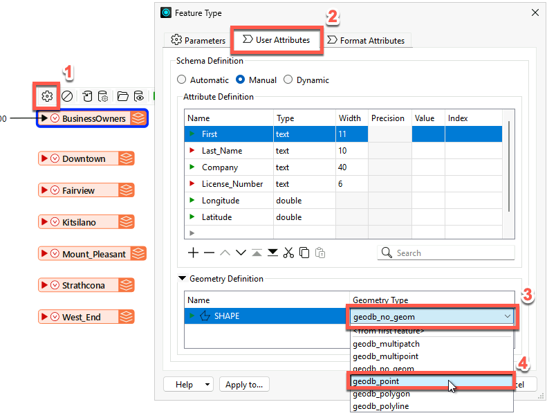
- Run the translation again. This time the Translation Log reports no errors, and only the 2 usual warnings.
Partial Runs
The green data cache buttons on objects on the canvas let you inspect your data at that point in the translation. These appear on objects when data caching is enabled under the Run menu.
Having data caching enabled also lets you conduct partial runs of your workspace. You can run part of your workspace by selecting an object and choosing from one of the available options.
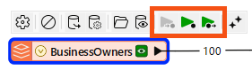
The sections of your workspace that will run are highlighted in green. Objects with a valid (green) data cache will not run when using the Run button. If you change your workspace, the cache for affected objects will become invalid (yellow). Running using the Run button or the partial runs buttons will update objects with invalid caches.
Leave Us Feedback on This Lesson